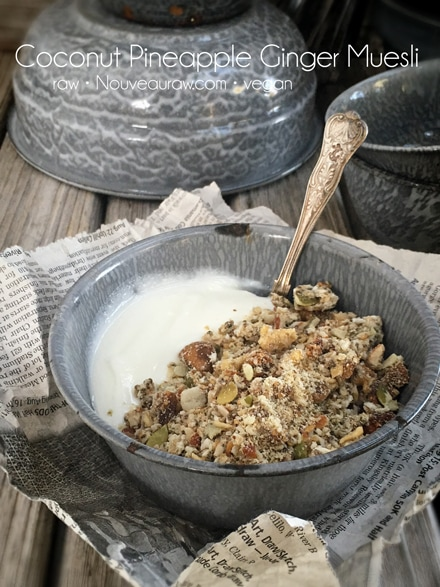

Coconut Pineapple Ginger Muesli

~ raw, vegan, gluten-free ~
I have always had a soft spot for cereal of all shapes and forms. I love making it, I adore the aroma that fills the house as it is dehydrating, and I simply swoon over the taste.
That being said I have tested just about every possible flavor combination in the world (slightly exaggerated but close!) and since I struggle to pick a favorite, I tend to go in waves. Every creation turns out to be my favorite. Is that wrong or just a good sign?
So I thought it was time to change up your usual breakfast routine with a touch of the exotic. The warmth of ginger and a touch of honey in this muesli works wonderfully with the tangy-sweet pineapple. To recap…. ginger, honey, pineapple?! Doesn’t that just sound heartwarming?
In case you are new to muesli-type cereals, they are meant to be enjoyed in several wonderful ways. Eat it straight up by pouring in some milk and chowing down, or even by the handful straight from the container. It is often eaten as a soaked breakfast cereal that has spent the night with either milk or yogurt. There really isn’t a right or wrong way.
Here, in the photo to the right, it is being enjoyed by pairing it up with yogurt. Take a spoonful of the creamy yogurt, a spoonful of the crunchy muesli or take the two in one bite. Trust me, by the time you take in your last spoonful, you are going to feel happy, satiated and well nourished. I hope that you enjoy this recipe. I made it with you in mind.
 Ingredients:
Ingredients:
yields 4 cups dried
- 4 cups gluten-free, rolled oats, soaked
- 1 cup almonds, soaked & chopped
- 1/2 cup pumpkin seeds, soaked
- 1 cup diced dried crystallized ginger, re-hydrated
- 1 cup dried pineapple, re-hydrated
- 2 cups coconut flakes, unsweetened
- 1/2 cup chia seeds, soaked in 1 1/2 cups water
- 1/4 cup coconut oil, melted
- 1/4 cup raw honey or equivalent
- 1/4 cup raw agave nectar or maple syrup
- 2 Tbsp whole flax seeds
- 1/2 tsp Himalayan pink salt
Preparation:
- After the oats are through soaking, drain and rinse them under cool water for 2 minutes.
- Use your fingers to agitate them while rinsing.
- Hand squeeze the excess water from them and place oats in a large bowl.
- Drain and discard the soak water from the almond and pumpkin seeds. Add to bowl.
- To rehydrate the dried crystallized ginger and pineapple, place them in a bowl and cover with hot water. Allow them to sit for at least 10 minutes.
- This will help them to soften and absorb the other flavors of the granola.
- Once they soften, drain the soak water.
- Combine all of the ingredients in a large bowl and mix until everything is well coated.
- Spread mixture out on the non-stick sheets that came with your dehydrator.
- Dehydrate everything at 145 degrees (F) for 1 hour, then reduce to 115 degrees (F) for 16-24 hours.
- At the halfway mark remove from the teflex sheets, allowing the muesli to continue drying on the mesh sheets until it is dry.
- Dry times will always vary depending on the climate, humidity and how thick or thin you spread the mixture.
- Once done and cooled, place the mixture in a food processor and pulse to a small-medium sized crumble.
- Store in a glass container. The shelf life will depend on how dry or moist you leave your muesli. The more moisture left in it, the shorter the shelf life. I tend to make up quart size bags of it and store in the freezer.
The Institute of Culinary Ingredients™
- What is Himalayan pink salt and does it really matter? Click (here) to read more about it.
- Are oats gluten-free? Yes, read more about that (here).
- Are oats raw? Yes, they can be found. Click (here) to learn more.
- Do I need to soak and dehydrate oats? Not required but recommended. Click (here) to see why.
Culinary Explanations:
- Why do I start the dehydrator at 145 degrees (F)? Click (here) to learn the reason behind this.
- When working with fresh ingredients, it is important to taste test as you build a recipe. Learn why (here).
© AmieSue.com